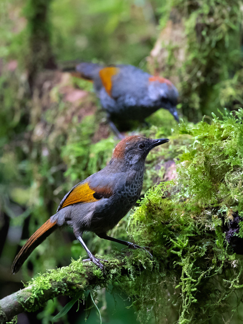
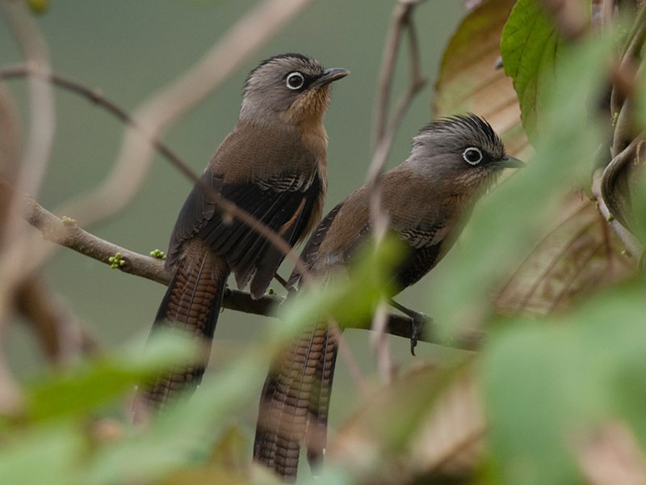

Garrulax ngoclinhensis is a species of bird in the Painter family.
The adult forehead is gray-brown with dark brown in the middle of the feathers at the back of the eyes and the sides of the head. Top of the head, crimson brown crimson; The shoulders, back and hips are light brown. The tail feathers are gray and fawn. Dark brown tail under. The coat is small and missed, gray and golden brown; large brownish-brown bristles with broad crimson brown band; feather blades in black wing angles; black primary wing feathers. The area in front of the black eyes; gray fur; The middle and sides of the chest are gray and silver gray. Abdomen to under tail grayish brownish yellow. Horned black beak; dark brown legs; Dark brown pupils.
Often come in pairs or small herds; very shy. Habitat is evergreen broadleaf forest on high mountains, good vegetation. There are many symbiotic plant species on the tree trunk. Altitude distributed over 2,000m.
Domestic: Quang Nam (Ngoc Linh Nature Reserve), Kontum (forest area of Kon Plong SFE). World: Only in Vietnam.
Endemic species of Vietnam. The new species, described for science in 1999, was first discovered in Ngoc Linh Mountain (Kontum and Quang Nam), and later found in the high mountains of Kon Plong Forest Enterprise (Kontum). Encounter uncommon in high elevation of distribution zone. Asian Bird Red Book (2001), VU rank (endangered).
Actinodura sodangorum is a species of bird in the Timaliidae family. They are found in Xekong province of Laos and Kon Tum province of Vietnam.
Adult birds have gray-brown fur. White eye rim. The top of the head has a black crest; nape turned ash gray; shoulders, back, hips and hips on tail yellow brown; on wings and tail with thin black stripes interspersed with dark brown stripes. The tip of the tail feathers is white. The throat and sides of the chin are black streaks. The rest of the underside of the body and lower tailed tail are brown. Bristles small brownish yellow, winged bristles missed dark brown; large, light yellow fur. Horn black beak. Horn gray.
Its natural habitats are highly humid mountainous regions with tropical and subtropical climates, scrublands, grasslands and high altitude plantations with tropical and subtropical climates. South Central region. Only recorded in Ngoc Linh mountain and the surrounding areas of Dak Ley and Dak To districts of Kon Tum province. Distributed at an altitude of about 1,200-2,500 meters. Evergreen forest and secondary forest, evergreen forest edge.
8 Ton That Thuyet, My Dinh, Tu Liem,
Ha Noi, Viet Nam.
0966469746 (Do Van Huan)
0666729716 (Nguyen Minh Nghia)
0522697743 (Duong Thanh Binh)
0849818969 (Le Van Phuong)
0373485924 (Nguyen Thanh Lam)
KawasakiZoo@gmail.com